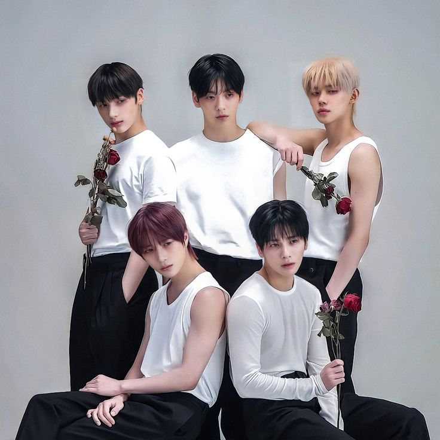

Tomorrow by Together
Billboard ahora ha revelado más logros de TXT en las listas de esta semana: para la semana que finalizó el 28 de octubre, “The Name Chapter: FREEFALL” y su canción principal “Chasing That Feeling” ingresaron a no menos de cinco listas separadas en el No. 1. Además de debutar en el puesto número 1 en la lista de mejores álbumes en ventas de Billboard, “The Name Chapter: FREEFALL” también arrasó con el puesto número 1 en las listas de mejores ventas de álbumes actuales, en la lista de álbumes Tastemaker y en la lista de álbumes mundiales esta semana. Mientras tanto, “Chasing That Feeling” debutó en el número 1 de la lista de ventas de canciones digitales mundiales de Billboard, donde TXT obtuvo cinco de los 10 primeros lugares de esta semana. Su nueva canción principal no solo entró en la lista en el n.° 1, sino que fue seguida por sus nuevos B-sides “Growing Pain” en el n.° 7, “Blue Spring” en el n.° 8 y “Dreamer” en el n.° 9. y “Deep Down” en el puesto 10. TXT también volvió a ingresar al Artist 100 de Billboard en el puesto número 2 para su semana 61 en general en la lista, extendiendo su propio récord como el artista de K-pop con la segunda mayor cantidad de semanas acumuladas en la lista . Fuera de la lista mundial de ventas de canciones digitales, “Chasing That Feeling” debutó en el puesto 12 en la lista principal de ventas de canciones digitales de Billboard, en el puesto 46 en la lista Global Excl. U.S. y número 72 en el Global 200 esta semana. Además, TXT ahora se ha convertido en el segundo grupo masculino de K-pop en la historia (nuevamente, después de BTS) en ubicar simultáneamente dos canciones diferentes en el Global 200 de Billboard.



Derechos reservados